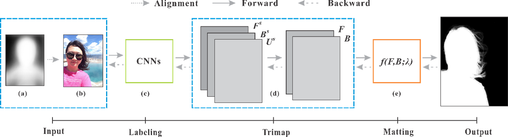
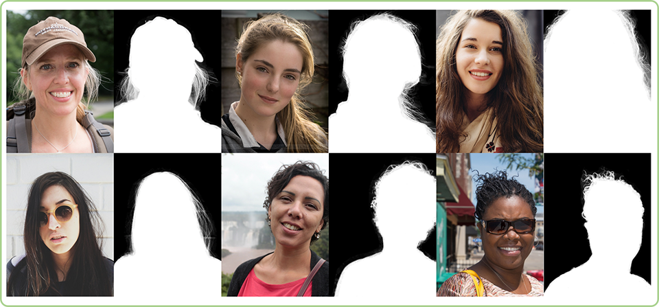
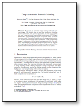

Xiaoyong Shen Xin Tao Hongyun Gao Chao Zhou Jiaya Jia
The Chinese Univeristy of Hong Kong
|  |
Our deep automatic portrait matting is an end-to-end CNNs, which takes a portrait as input and directly predicts the alpha matte. The framework mainly includes two parts. The first one is the trimap labeling and the second is the matting layer with our novel defined functions. |
Abstract
We propose an automatic image matting method for portrait images. This method does not need user interaction, which was however essential in most previous approaches. In order to accomplish this goal, a new end-to-end convolutional neural network (CNN) based framework is proposed taking the input of a portrait image. It outputs the matte result. Our method considers not only image semantic prediction but also pixel-level image matte optimization. A new portrait image dataset is constructed with our labeled matting ground truth. Our automatic method achieves comparable results with state-of-the-art methods that require specified foreground and background regions or pixels. Many applications are enabled given the automatic nature of our system.
Related Project
Automatic Portrait Segmentation for Image Stylization, which was reoprted by Nvidia, PetaPixel, DIYPhotography, ITHome, etc.
Results
|  |
Downloads
|  | "Deep Automatic Portrait Matting" Xiaoyong Shen, Xin Tao, Hongyun Gao, Chao Zhou, Jiaya Jia. European Conference on Computer Vision (ECCV), 2016 |
Last update: Oct. 1, 2016